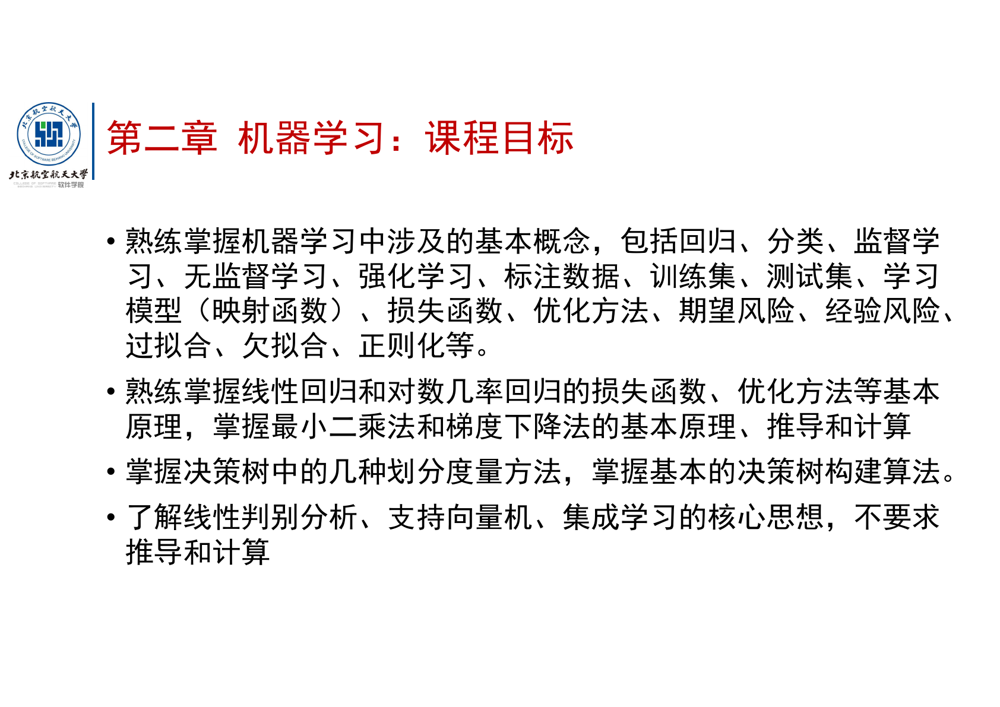
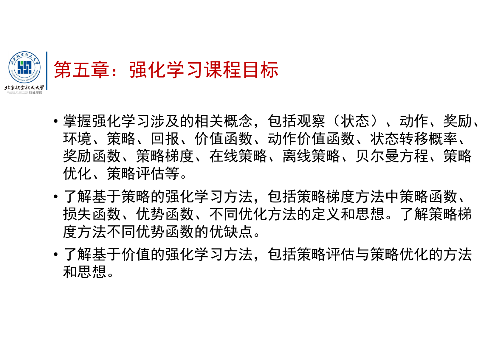

6.22 晚 / 6.23 早使用
Day7 正课闭环
不塞进 Day2
AI Day7 老师总纲终局闭环：最后一课怎么变成考场答案
这页不是新的 AI 大地图，也不是让你现在就多开一条线。它只在数据管理技术考完后、AI 考前最后一晚使用：把第 14 讲课程总结和最后一节课老师口头提醒压成“出题方向 -> 应答动作 -> 题卡”。
0. 什么时候看：它是终局压缩，不是今天新任务
今天 6.18 不强行看
你现在正在吃 Day2 标准包，AI 只要把模型故事线、机器学习题卡、必要的神经网络题卡读顺。Day3 启动可以慢，不为了赶进度牺牲吸收。
6.22 数据库考完后看
当晚不再从头学 AI，而是用本页核对：机器学习、深度学习、生成式 AI、强化学习、搜索/场景题有没有都能写第一句。
6.23 考前早上复刷
只看本页的“必会动作表”和“终局题卡错题”，不再打开一堆总纲、Tips、讲次覆盖页。
和前面讲义的关系
Day2/Day3/Day4/Day5 负责学会；本页负责考前叫醒。不会的点回对应讲义补，已经会的点只刷题眼和第一句。
资料说明： 最后一节课转写有口误，我按课程语义归并。尤其“基础学习”应理解为“机器学习”，“转机/选机”多处对应“卷积”，“乔汉学习”对应“强化学习”。本页依据老师明确反复强调的范围、题型和作答要求 ，不把转写噪声当新考点。
0.8 最后一晚怎么用：70 分钟终局流程
这页不是从头学 AI，而是把已经学过的东西压成考场可调用能力。你按下面四段走，像过安检一样逐项通过；卡住就回对应 Day 页，不在这里重新开大课。
0-15 分钟：看范围
只看第14讲四张目标图和本页“五条主线”。把重点分成：机器学习、深度学习、生成式 AI、强化学习。
15-35 分钟：背动作
看“必会动作表”。每个公式只背三件事：它解决什么、第一步怎么写、最容易错在哪里。
35-65 分钟：做题卡
做 8 道终局题卡。要求先写 2-4 句，不许直接看答案；答案只用来修正你的第一句话。
65-70 分钟：勾闸门
看最后“考前闸门”。不稳的只回对应一页补，不再打开所有资料乱翻。
救火版 25 分钟： 如果数据库考完很累，只做三件事：看第14讲原图 5 分钟、背必会动作表 10 分钟、做题 1/3/6/8 四道代表题 10 分钟。你不需要完美，但要让脑子重新接上线。
0.9 AI 正式五类题型雷达：先认卷面，再调知识
AI 最容易让人崩的原因不是“一个模型都没听过”，而是题目把模型、公式、曲线、表格和场景揉在一起，你不知道它到底要你做什么。正式题型已经确定为 选择、填空、计算、简答、综合 ，并且 无需计算器 。这说明卷子更看重你能不能识别题型、解释公式、做小步骤和写清模型逻辑。
题型 卷面样子 考场第一动作 你要训练到什么程度
选择/填空
问某模型属于哪类、哪个说法正确、哪个性质最匹配。
先分家族：监督/无监督/强化，回归/分类，判别/生成，再判断关键词。
能把 SVM、LDA、决策树、AdaBoost、CNN、Transformer、VAE、GAN、Diffusion、Q-learning 放到正确抽屉里。
计算题
给小表格、小矩阵、混淆矩阵、Q 表或简单损失函数。
先写公式量：总熵、加权子熵、卷积窗口乘加、TP/FP/FN、当前 Q 和下一状态最大 Q。
不用追复杂数值，重点是步骤顺序不能乱；数字简单时要能稳稳算完。
简答题
解释模型原理、为什么这样设计、优缺点、适用场景。
按四句写：它解决什么 -> 怎么做 -> 好在哪里 -> 局限或适用场景。
每个高频模型至少会写一段“不是口号”的答案，例如 BP 要说链式法则和梯度，GAN 要说生成器/判别器对抗。
综合题
给一个任务场景，再混入曲线、表格、模型选择或改进建议。
先拆四层：任务层看要预测什么，模型层看用什么，证据层看曲线/指标，建议层写改进。
不会整题空掉；即使某个公式忘了，也能先拿任务分析、模型原理、指标解释和建议分。
和 Day5 的关系： Day5 负责练“题眼闯关”和“混合题拆法”；本节只负责把正式卷面问法压成入口。你做题前先看这里 2 分钟，再去 Day5 或本页题卡练。
0.5 第14讲原图核对：老师到底划了哪些范围
这四张图是第 14 讲课程总结里的目标页。它们决定 AI 复习的主线：机器学习要求最硬，深度学习重 CNN/自注意力/训练策略，生成式 AI 重概念比较，强化学习重状态动作奖励与 V/Q/Bellman/Q-learning。

机器学习： 熟练掌握基本概念、线性回归/逻辑回归、最小二乘/梯度下降、决策树；LDA/SVM/集成学习了解核心思想。
深度学习： CNN 和自注意力要求会基本原理和计算；训练策略要会判断欠拟合、优化问题、过拟合。
生成式 AI： PCA/AE/VAE/Diffusion/GAN 重点是核心思想和比较，不要求大推导。

强化学习： 概念多，重点是状态、动作、奖励、策略、V/Q、Bellman、策略评估/优化。
怎么用这四张图： 你不需要逐字背 PPT。你要把每张图转成考场动作：机器学习会写公式和步骤；深度学习会解释结构和小计算；生成式 AI 会比较模型；强化学习会把场景翻译成 MDP/RL 语言。
1. 老师最后一课到底透露了什么
你不用把转写逐字背下来，真正有考试价值的是这些信号：
老师信号 翻译成复习动作 对应页
第 14 讲/课程总结是复习纲要，直接按这个目录复习。 AI 不能只刷参考题前半；机器学习、深度学习、生成式 AI、强化学习 都要有最低可答能力。 Day3、Day4、Day5 + 本页 作业里的问答题基本就是大题类型，不会原题照搬，但题型很像。 不要只做选择题。每个模型至少会写定义、原理、为什么、优缺点/适用场景 。 Day3 题卡、Day5 混合小测 线性回归、最小二乘、梯度下降、正则化、权重影响要会解释甚至推。 公式不是背字符串，要会说 X/Y/w/R/λ 在干什么，为什么正则项必须约束参数。 Day3 + 本页题卡 1-2 决策树计算要掌握，可能考信息熵、信息增益/增益率和建树步骤。 看到表格题，第一行写总熵 -> 按属性加权子熵 -> 信息增益 。 Day3 + 本页题卡 3 卷积和自注意力需要会算，Transformer 建议掌握。 CNN 至少会滑动窗口乘加；Attention 至少会解释 Q/K/V、相关性权重和 V 加权汇总。 深度/生成桥接 + 本页题卡 5-6 生成式 AI 不要求推导计算，但要理解 PCA、AE、VAE、Diffusion、GAN 的核心思想。 生成模型题多是简答/比较，重在区分重构、可采样隐空间、加噪去噪、判别器 。 Day4、Day5 + 本页题卡 7 强化学习难，概念多，Bellman/Q-learning/机器人迷宫类题要会。 先翻译场景为状态、动作、奖励、策略 ，再写 V/Q/Bellman/Q-learning 或搜索。 Day4 + 本页题卡 8
一句话总策略： AI 考试不是大型计算，而是小计算 + 公式解释 + 模型比较 + 场景翻译 。你要练的是看到题干先写第一句，不能在名词堆里发呆。
1.5 参考习题信号雷达：看到这些词，第一步这样写
参考题信号 不要这样想 考场第一步
SVM 分类边界 / 支持向量 “离边界近就是难样本，所以随便圈几个点。” 先写：SVM 选择最大间隔超平面，真正决定边界的是贴在间隔边界上的支持向量。 信息增益率 / 构建决策树 “信息增益越大永远越好。” 先写：总熵 -> 属性划分后加权子熵 -> 信息增益；若属性取值很多，再说明增益率修正分支过多偏好。 BP 描述正误辨析 “BP 就是神经网络训练，写这句就够了。” 先写：BP 根据输出误差，用链式法则从后往前计算各层参数梯度，再用优化方法更新权重。 训练误差 / 测试误差曲线 “测试差就一定只写过拟合。” 先看训练损失是否也高：两边高偏欠拟合/优化不足；训练低测试高才是典型过拟合。 GAN 训练 / 生成器判别器 “GAN 就是生成图片。” 先写：生成器试图造出逼真样本，判别器区分真伪，二者对抗训练；再补训练不稳定/模式崩塌。 Q-learning / Sarsa “都更新 Q 表，公式差不多。” 先写：Q-learning 用下一状态最大 Q，是 off-policy；Sarsa 用实际采取的下一动作，是 on-policy。 探索与利用 “选最大回报就行。” 先写：利用选择当前最优动作，探索尝试未知动作；epsilon-greedy 用小概率探索避免陷入局部最优。 MDP / 机器人网格 “直接画路径。” 先翻译四件套：状态是格子/局面，动作是移动方向，奖励是到达或碰壁反馈，策略是在状态下选动作的规则。
2. 五条主线：考前脑子里只保留这张路由
题干
先看输出和训练信号
有标签
回归/分类/指标
表格划分
树/Boosting
图像/文本
CNN/Attention
奖励决策
线性/SVM/指标
损失、泛化、正则
决策树/AdaBoost
熵、增益、权重
CNN/Transformer
卷积、Q/K/V
RL/搜索
答案结构
定义
原理/公式
步骤/比较
坑点/结论
有标签 输出数字是回归；输出类别是分类；训练好测试差是泛化题。
表格划分 熵、信息增益、基尼、样本权重，先列步骤再算小数。
图像/文本 CNN 看局部，Transformer 看全局相关性，RNN/LSTM 看序列记忆。
奖励决策 状态、动作、奖励、策略、V/Q，先翻译场景再写公式。
4. 终局题卡：按老师提醒练“会写答案”
题 1：正则化不是背 λ
题目： 为什么正则化项应该约束模型参数？如果正则项与 w 无关，或者错误地鼓励参数变大，会产生什么问题？
展开参考答案与解析
标准答法： 正则化的目的是在经验风险之外加入模型复杂度惩罚，限制模型为了拟合训练集噪声而变得过于复杂。线性模型里真正决定函数形状的是参数 w 和 b，所以正则项应当约束这些参数。若正则项与 w 无关，它对参数求导为 0 或只提供常数，优化时不会推动模型选择更简单的参数，因此起不到约束作用。若正则项方向写反，等于鼓励参数变大，可能加剧过拟合，与正则化目标相反。
得分点 目的：防过拟合；对象：参数 w/b；机制：复杂度惩罚；反例：与参数无关无约束，方向反会鼓励复杂。
迁移 老师最后课反复提醒“正则化到底约束什么”。考场不要只写“加 L2”，要说明为什么它能影响模型选择。
题 2：线性回归推导骨架
题目： 给出最小二乘损失，说明如何求最优 w，并解释为什么样本权重 R 会改变模型拟合重点。
L (w ) = (Y − X w )T (Y − X w )
展开参考答案与解析
推导骨架： 最小二乘希望让预测 Xw 与真实 Y 的平方误差最小。对 w 求导可得 -2XT (Y-Xw)，令导数为 0，得到 XT Xw = XT Y；若 XT X 可逆，则 w* = (XT X)-1 XT Y。考试通常不要求你写很长推导，但要能说出“损失 -> 求导 -> 令零 -> 解参数”的链条。
权重 R： 加权最小二乘把不同样本的重要性放进损失中。某样本权重大，则它的残差对总损失影响更大，模型会更努力拟合这些样本。注意 R 不是正则项；R 权衡样本，正则项约束模型复杂度。
常见坑 只背闭式解但不会解释“为什么对 w 求导”，或者把 R 写成特征矩阵。X 是特征矩阵，Y 是标签，w 是参数，R 是样本权重。
题 3：决策树小计算第一步
题目： 某二分类数据集总熵 H(D)=1。按属性 A 划分后的加权子熵为 0.4，按属性 B 划分后的加权子熵为 0.7。若用信息增益选择划分属性，应选哪个？为什么？
展开参考答案与解析
计算： Gain(A)=1-0.4=0.6，Gain(B)=1-0.7=0.3，因此选择属性 A。信息增益越大，说明按该属性划分后类别不确定性下降越多，节点更“纯”。
题眼 熵、信息增益、属性选择、ID3、划分后混乱程度下降。
迁移 如果题目换成信息增益率，记得它是为缓解“分支很多的属性容易占便宜”的问题。老师说决策树计算要会，数值通常不会逼你用计算器，第一步方向最重要。
题 4：训练策略曲线题
题目： 模型 A 训练损失和验证损失都高；模型 B 训练损失低、验证损失高；模型 C 把网络从 20 层加到 56 层后训练损失反而没有更低。分别可能是什么问题？如何改？
展开参考答案与解析
A： 训练损失和验证损失都高，说明模型连训练集都学不好，可能是欠拟合或特征/模型能力不足。可增加模型容量、改进特征、训练更久，或减弱过强正则化。
B： 训练损失低但验证损失高，是典型过拟合。模型对训练集拟合太紧，泛化差。可用正则化、早停、数据增强、增加数据、降低模型复杂度、dropout 等。
C： 更深网络训练损失没有更低，老师最后课强调这更像优化问题，不是单纯欠拟合。可考虑更好的优化器、学习率策略、归一化、残差连接、初始化等。
关键 验证损失高不一定永远等于“加正则”。先看训练损失是否也高，再判断欠拟合、过拟合还是优化问题。
题 5：卷积真的会算
题目： 输入局部窗口为 [[1,2],[3,4]]，卷积核为 [[1,0],[0,-1]]，该位置卷积输出是多少？卷积核在图像里主要起什么作用？
展开参考答案与解析
计算： 1×1 + 2×0 + 3×0 + 4×(-1) = -3。卷积计算就是窗口和卷积核逐项相乘再求和。
作用： 卷积核像一把小刷子在图像上滑动，提取局部空间特征，例如边缘、纹理、局部形状。CNN 之所以适合图像，是因为图像的重要信息常常以局部区域形式出现，且同一种局部特征可在不同位置重复出现。
常见坑 不要只写“CNN 用于图像”。老师明确提醒卷积需要自己算一算，考场若给小矩阵，第一步就是窗口乘加。
题 6：自注意力不是背 QKV
题目： 解释自注意力中 Q、K、V 的直观含义，并说明 Transformer 为什么适合处理文本序列。
展开参考答案与解析
标准答法： Q 可以理解为当前位置“想查什么”，K 是每个位置提供的“可匹配索引”，V 是真正要被汇总的内容。自注意力先用 Q 和 K 计算当前位置与其它位置的相关性，再通过 softmax 变成权重，最后对 V 加权求和来更新表示。
为什么适合文本： 文本中的词需要根据上下文理解含义，自注意力能让任意位置之间直接建立联系，不像 RNN 那样只能逐步传递信息，因此更适合长距离依赖，也更容易并行训练。Transformer block 中 attention 负责信息交流，后面的全连接层负责进一步加工每个 token 的表示。
迁移 BERT 偏理解，常用 mask 预测；GPT 偏生成，按前文预测下一个 token。AI Agent 则是在大语言模型外加记忆、任务管理和工具调用能力。
题 7：生成模型四兄弟比较
题目： 比较 AE、VAE、Diffusion、GAN。要求写出各自核心思想，并说明为什么 VAE/Diffusion 更接近生成。
展开参考答案与解析
AE： 自编码器用编码器把输入压缩为隐表示，再用解码器重构输入，训练目标是最小化重构误差。它更像特征学习/降维工具，随机采样生成能力较弱。
VAE： 变分自编码器让编码器输出隐变量分布而不是固定点，并通过重构损失与分布约束训练，使隐空间连续、可采样，因此可以从隐空间采样后解码生成新样本。
Diffusion： 扩散模型前向逐步加噪，反向训练网络预测噪声或去噪，从噪声一步步恢复样本。它把生成拆成多步，训练较稳定，生成质量高，但采样较慢。
GAN： 生成器负责造样本，判别器负责判断真假，二者对抗训练，直到判别器难以区分真实和生成样本。优点是生成清晰，缺点是训练不稳定、可能模式崩塌。
题眼 重构 -> AE；分布/采样/KL -> VAE；加噪/去噪/预测噪声 -> Diffusion；生成器/判别器 -> GAN。
题 8：强化学习场景翻译
题目： 机器人在迷宫中从起点走到终点，每一步可上下左右移动，撞墙得 -1，到终点得 +10。请写出强化学习建模中的状态、动作、奖励、策略，并说明 Q-learning 更新时第一步看什么。
展开参考答案与解析
场景翻译： 状态 s 可以是机器人当前所在格子或迷宫局面；动作 a 是上、下、左、右；奖励 r 是撞墙 -1、到达终点 +10，也可设计普通移动小惩罚；策略 π 是在某个状态下选择动作的规则。
Q-learning 第一步： 先找下一状态 s′ 中所有可选动作的最大 Q 值，构造目标 r + γ max Q(s′,a′)，再用学习率 α 让当前 Q(s,a) 往这个目标靠近。Q-learning 是离策略，因为更新时看的是下一状态最大 Q，而不是实际采样到的下一动作。
迁移 如果题目把机器人迷宫说成搜索问题，也可以写 BFS/DFS/A*；如果强调状态、动作、奖励、策略，就切强化学习。